Bataan is politically subdivided into 11 municipalities and one component city.
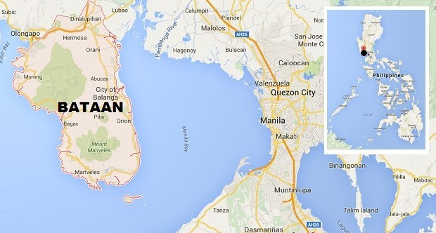
Here are the following municipalities with a brief history and etymology, including one of their famous tourist spots:
ABUCAY
Abucay originated from abu-kinaykay meaning "digging the ashes".
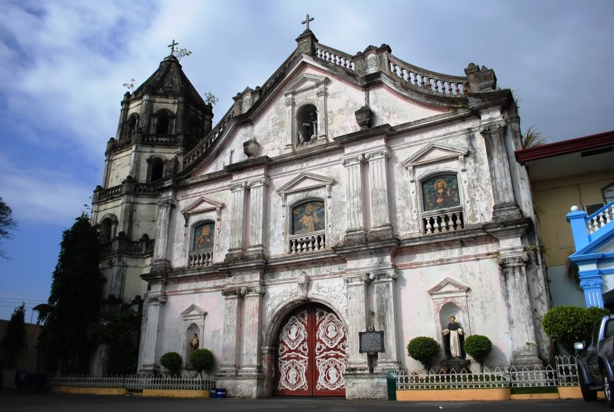
The Saint Dominic Parish Church
(source: http://abucaytouristspot.blogspot.com/2017/07/6-famous-local-attraction-and-land.html)
Abucay, officially the Municipality of Abucay, (Tagalog: Bayan ng Abucay; Kapampangan: Balen ning Abucay), is a 3rd class municipality in the province of Bataan, Philippines. According to the 2015 census, it has a population of 39,880 people.
The mainly agricultural and fishing town is situated on the northeastern portion of the Bataan Peninsula, along Manila Bay, with a total land area of 79.72 square kilometres (30.78 sq mi). It is 116 kilometres (72 mi) from Manila, accessible via the Bataan Provincial Expressway, off Exit 25, or the parallel National Road in Bataan. Its westernmost elevated section is located within the Bataan National Park.
BAGAC
When the Spaniards inquired about them to their guide, the Aeta replied, “Iyon po ay mga ibong tagak.” Came “bak and “gak”, and soon it became Bagac. Bagac is the biggest town in terms of land area in Bataan. Established in 1873, one of the oldest churches in the Philippines may be found here in Bagac with St.
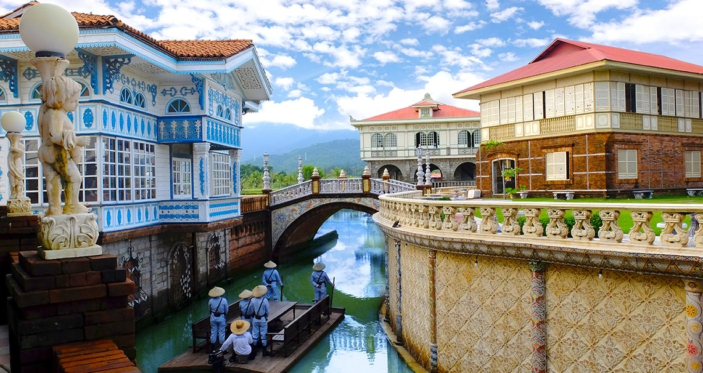
Las Casas Filipinas de Acuzar
(source: https://stays.tripzilla.com/en/philippines/hotels/las-casas-filipinas-de-acuzar)
Bagac, officially the Municipality of Bagac (Tagalog: Bayan ng Bagac; Kapampangan: Balen ning Bagac), is a 3rd class municipality in the province of Bataan, Philippines. According to the 2015 census, it has a population of 26,936 people.
With an area of 231.20 square kilometres (89.27 sq mi), Bagac is the largest municipality in Bataan.
balanga
The word Balanga originates from the Kapampangan word "balañga" (clay pot, or "bang" in Tagalog), which the town used to produce and which were among the best that can be found in the country..
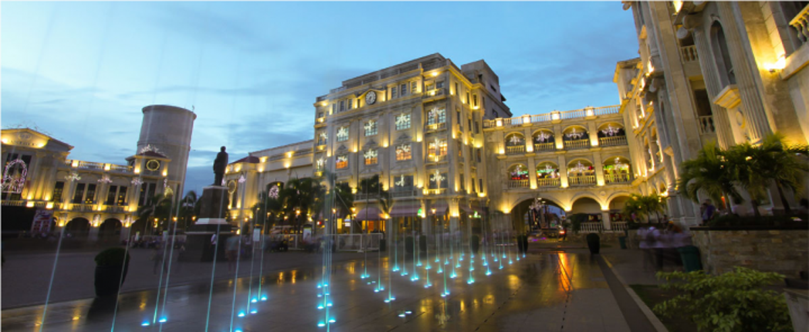
Plaza Mayor de Ciudad de Balanga
(source: https://www.wheninmanila.com/when-in-bataan-7-spots-you-have-to-visit-for-the-summer/bataan-plaza-mayor-de-ciudad-de-balanga/)
Balanga, officially the City of Balanga (Tagalog: Lungsod ng Balanga; Kapampangan: Lakanbalen ning Balanga), or simply referred to as Balanga City, is a 4th class city and capital of the province of Bataan, Philippines. According to the 2015 census, it has a population of 96,061 people.
Balanga City is primarily a residential-agricultural city, with a rapidly growing commercial sector. It has a total land area of 11,163 hectares (8.13% of Bataan). It borders Pilar to the south, Abucay to the north, Morong to the west, and Manila Bay to the east.
Dinalupihan
The name "Dinalupihan" means "empty lands", coming from the Spanish terms din, a, and lupia. It referred to the fact that it failed to produce little revenue while it was an estate of the Archdiocese of Manila during the second half of the 18th century.
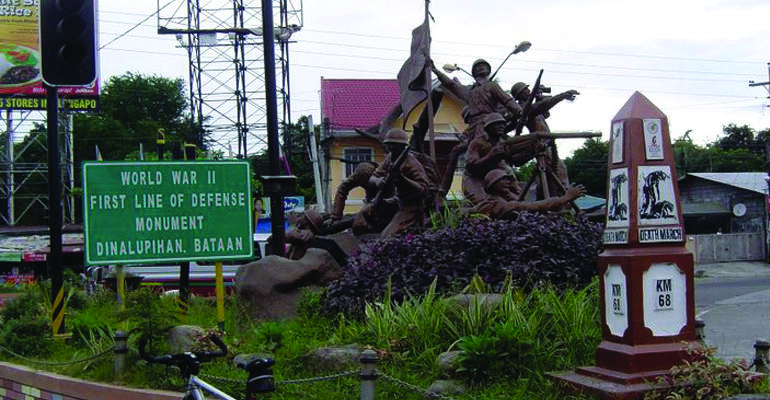
First Line of Defense Monument
https://yoorekka.com/magazine/subic-clark-central-luzon/2018/04/06/11-historic-tourist-spots-that-will-bring-you-back-to-bataans-past/
Dinalupihan, officially the Municipality of Dinalupihan (Tagalog: Bayan ng Dinalupihan; Kapampangan: Balen ning Dinalupihan), is a 1st class municipality in the province of Bataan, Philippines. According to the 2015 census, it has a population of 106,371 people.
Dinaluphian, the only landlocked town in the province, is accessible via SCTEX (Subic-Clark-Tarlac Expressway) and the Bataan Provincial Expressway, off Exit 5.
hermosa
According to legend, a group of Spaniards first came to this place, surprised and amazed they exclaimed, Que Hermosa! Que Hermosa!, when they saw some pretty maidens with long, black hair washing clothes and bathing in the brook. The boys who accompanied their sisters repeated what they heard from the Spaniards and upon returning home they repeated again and again what the Spaniards exclaimed. When the next group of Spaniards visited the place, they asked for its name. The folks didn't understand Spanish but answered "Hermosa, Hermosa". And that was how Hermosa got its name.
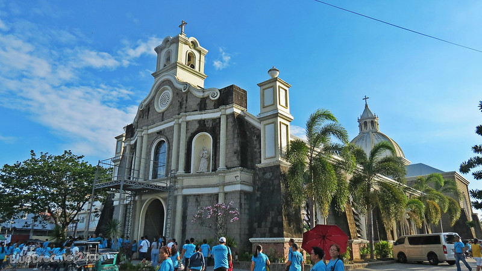
St. Peter of Verona Parish
(source: https://bluedreamer27.com/bataan-pilgrimage-tour-saint-peter-of-verona-parish-in-hermosa-bataan/)
Hermosa, officially the Municipality of Hermosa (Tagalog: Bayan ng Hermosa; Kapampangan: Balen ning Hermosa), is a 1st class municipality in the province of Bataan, Philippines. According to the 2015 census, it has a population of 65,862 people.
"Hermosa" means "beautiful" in Spanish. It has a total land area of 157.00 square kilometres (60.62 sq mi).
Hermosa is home to the Roosevelt Protected Landscape. It is accessible via the Bataan Provincial Expressway, off Exit 10.
limay
The inhabitants of this place are used to saying “ay” as part of their accent. The Spaniards thought that was the answer to their question and went on with the knowledge that this was “Limay”. From then on, this town was called Limay.
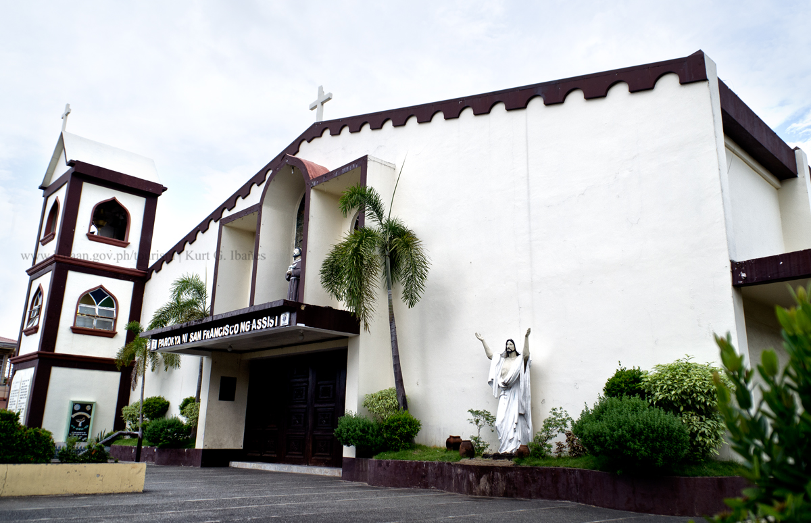
St. Francis of Asisi Church(source: https://www.beholdbataan.ph/destinations/cultural/churches/saint-francis-of-asisi-church-limay)
Limay, officially the Municipality of Limay (Tagalog: Bayan ng Limay; Kapampangan: Balen ning Limay), is a 1st class municipality in the province of Bataan, Philippines. According to the 2015 census, it has a population of 68,071 people.
Limay is accessible via the Bataan Provincial Expressway (Route 301), off Exit 45, San Fernando Exit. Located at the south-eastern section of Bataan Peninsula, it is 136 kilometres (85 mi) from Manila and 15 kilometres (9.3 mi) south from the provincial capital Balanga.
mariveles
The name Mariveles is said to come from “maraming dilis” wchich pertains to the abundant anchovies caught on the sesa surrounding the municipality. “Maraming dilis” was shortened to “mara-dilis” and eventually Mariveles through the passage of time.
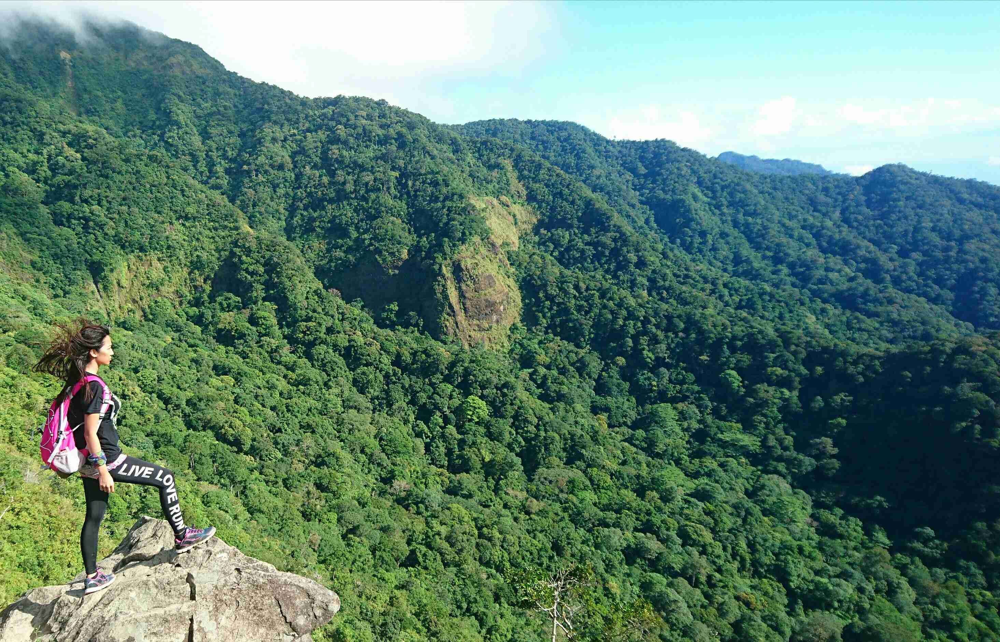
Tarak Ridge
(source:https://trackthattravel.com/travelblog/807)
Mariveles, officially the Municipality of Mariveles (Tagalog: Bayan ng Mariveles; Kapampangan: Balen ning Mariveles), is a 1st class municipality in the province of Bataan, Philippines. According to the 2015 census, it has a population of 127,536 people.
morong
Folkloric tradition alludes the etymology of the name Moron to the Spaniards' mishearing of the phrase "mga Moro umurong" when they asked the local people the name of their village. The historical accuracy of this etymology is questionable, however, since early Filipinos could not have known or used the term Moro as it were the Spaniards who have started using the term to refer to Filipino Moslems, a Spanish term for the Moslem Moorish conquerors of 8th century Spain.
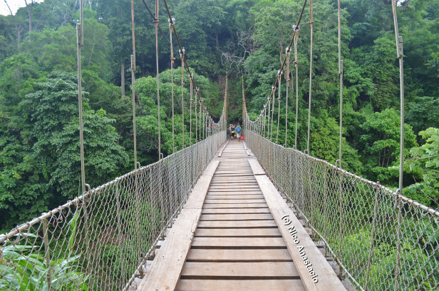
Kanawan Hanging Bridge
(source: https://biyahengjuansided.com/aeta-community-in-morong-bataan/)
Morong, officially the Municipality of Morong (Tagalog: Bayan ng Morong; Kapampangan: Balen ning Morong), is a 3rd class municipality in the province of Bataan, Philippines. According to the 2015 census, it has a population of 29,901 people.
The municipality is home to the Subic Bay International Airport, the Bataan Nuclear Power Plant, and the former Philippine Refugee Processing Center. Morong was formerly known as Moron.[5] It is accessible via the Bataan Provincial Expressway, off Exit 65
orani
The word Orani is supposed to have originated from the word “Maruani” ( a group of settlers) which was probably introduced by the Samal people who wandered into the town an settled there in the earlt days, about 300 years ago—the period which might be considered the beginning of the history of the town.
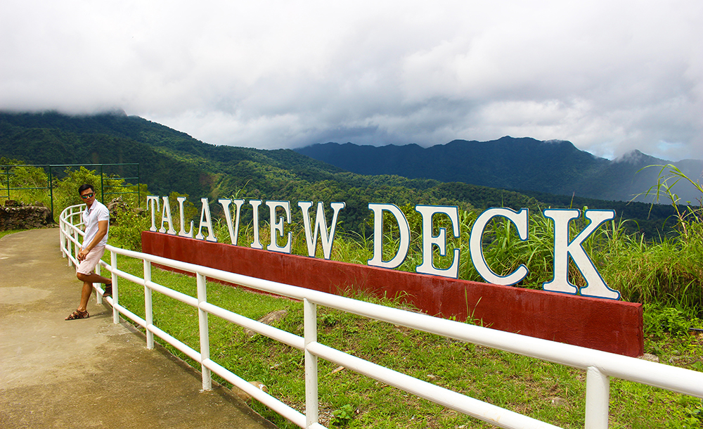
Tala View Deck
(source: https://www.willexplorephilippines.com/orani-bataan-tourist-spots-and-ecotourism/)
Orani, officially the Municipality of Orani (Tagalog: Bayan ng Orani; Kapampangan: Balen ning Orani), is a 1st class municipality in the province of Bataan, Philippines. According to the 2015 census, it has a population of 66,909 people.
Palay, coffee, vegetables, peanut, citrus trees and fruit trees are the major produce. Cutflowers like aster, chrysanthemum and gerbera are locally cultivated while bamboo and jungle vines can be gathered from Orani's forestlands. Aquamarine resources like milkfish, tilapia, prawn, crabs, mussels and oysters are caught in Orani's fishing grounds and fishponds.
orion
People of this town had known many stories of how Orion got its name. Some folks say that Udyong was the first name adapted by this town. It came from the words “lu-ad” and “uryong” which meant muddy, because of the fact that the place was muddy and swampy during those times.
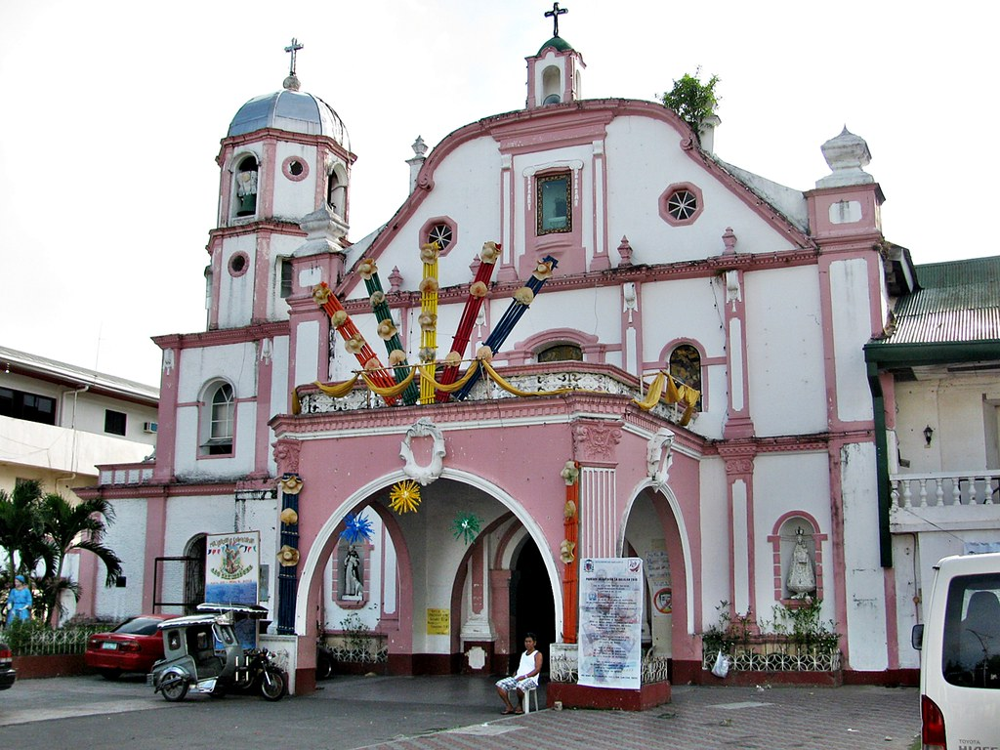
St. Michael the Archangel Parish
(source:https://www.flickr.com/photos/11541098@N06/8768324692)
Orion, officially the Municipality of Orion (formerly Udyong), (Tagalog: Bayan ng Orion; Kapampangan: Balen ning Orion), is a 2nd class municipality in the province of Bataan, Philippines. According to the 2015 census, it has a population of 56,002 people.
On January 29, 2019, a massive fire burned down over 900 houses in Sitio Depensa, Barangay Kapunitan, killing 1 person, injuring 50 persons, and affecting 1,018 families, or 6,131 individuals. The blaze was attributed to children who carelessly played with matches and afterwards mistakenly tried to douse the flames with gasoline. The fire was able to spread quickly since the sitio consisted mostly of bamboo houses, most of which stored gasoline for fishing boats.
pilar
One of the oldest towns of Bataan, Pilar was previously part of Pampanga. Spaniards in the galleon landed in a sitio of Balanga and were greeted by the natives. The place was named in the honor of the image of the Our Lady of the Pillar, hence the town was called "Pilar".
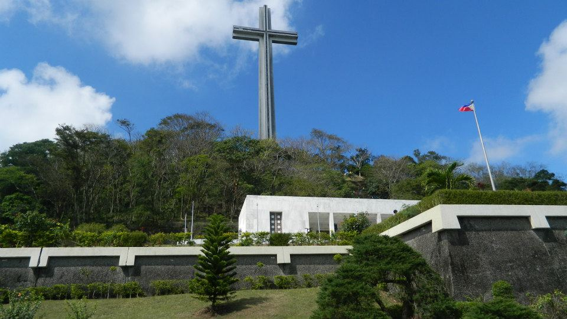
Mount Samat Shrine
(source: https://joytothewww.wordpress.com/2013/08/30/mt-samat-national-shrine-dambana-ng-kagitingan/)
Pilar, officially the Municipality of Pilar (Tagalog: Bayan ng Pilar; Kapampangan: Balen ning Pilar), is a 3rd class municipality in the province of Bataan, Philippines. According to the 2015 census, it has a population of 41,823 people.[3]
The Bataan Government Center and the historic Mount Samat National Shrine (Dambana ng Kagitingan) are both situated within the municipality in Barangays Diwa and Ala-uli, respectively.
samal
Samal originated from samel, a covering attached to a banca to protect the passengers from the sun and rain, made of nipa leaves and woven together. Samal was the second town founded by the Dominican friars in Bataan and is composed of four barrios: Calaguiman, Santa Lucia, Poblacion and Lalawigan.
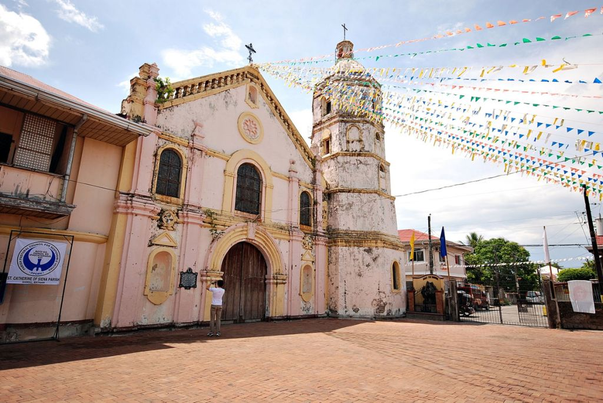
St. Catherine of Siena Parish
https://www.brideworthy.com/churches/parish-of-saint-catherine-of-siena/
Samal, officially the Municipality of Samal (Tagalog: Bayan ng Samal; Kapampangan: Balen ning Samal), is a 4th class municipality in the province of Bataan, Philippines. According to the 2015 census, it has a population of 35,298 people.
Samal is situated in the north-eastern portion of Bataan, 110 kilometres (68 mi) away from Manila. It has a total land area of 56.30 square kilometres (21.74 sq mi).
Other site references:
wikipedia
bataan.gov.ph